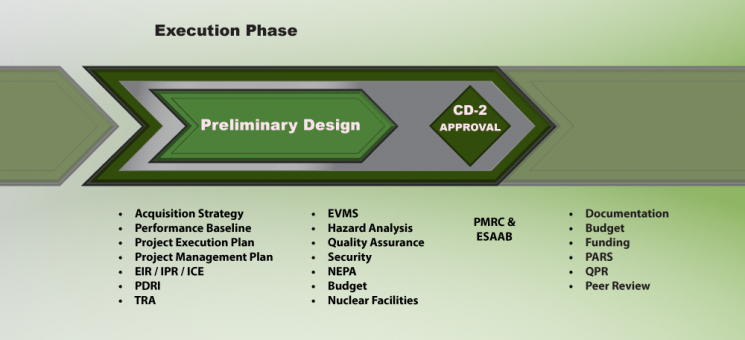

Description
- Completion of preliminary design is the first major milestone in the project Execution Phase. The design must be sufficiently mature (refer to DOE O 413.3B, Appendix C, Paragraph 4) at the time of CD-2 approval to provide reasonable assurance that the design will be implementable within the approved PB. The document signed by the CE or PME approving CD-2 must clearly specify the project’s approved PB, which includes the TPC, CD-4 date (month and year), scope and minimum Key Performance Parameters (KPPs) that must be achieved at CD-4. The requirements needed to attain CD-2 are listed below.
- Optional budget request process for construction projects. Upon PME approval, a construction project can submit a line item budget request prior to CD-2 approval, provided the PME accepts the following conditions:
- Project will document the strategy to request funds prior to CD-2 approval in the AS and preliminary PEP.
- Construction funds cannot be expensed until the approval of CD-2 and CD-3, with exception of CD-3A approval for long lead procurement, where applicable.
- CD-2 approval is obtained within one year following OMB budget submission to Congress. Typically, there are no exceptions and subsequent budget requests would not be allowed until CD-2 approval.
- If CD-2 approval is not achieved within one year following budget submission, any future budget requests for construction must be approved by the CE through the ESAAB process.
- A default original performance baseline (or TPC) will be established equivalent to the top-end range at CD-1 with the initial budget submission. At that time, a funding profile will be established and included in the PDS to support this default cost baseline.
- This original PB is refined with formal CD-2 approval and cannot exceed the top-end range established at CD-1. The project funding profile will be modified accordingly to align with the CD-2 cost baseline.
- If the ultimate CD-2 breaches the top-end cost range established at CD-1, approval to continue the project will be obtained from the CE through the ESAAB process.
- If long lead procurement is needed upon budget submission, pursue CD-3A with the PME. (The default CD-2 performance baseline [or TPC] is the upper limit of the CD-1 cost range.)
- Execution typically comprises the longest and most costly phase of the project, but is only a fraction of the total life-cycle cost of a project. Value Management (VM) and VE techniques, as appropriate, should be used to ensure that the most effective life-cycle solutions are implemented. Refer to OMB Circular A-131.
| Subject | Requirements Prior to CD-2 | ||
|---|---|---|---|
| References | Templates | Examples | |
| Acquisition Strategy | Approve an updated Acquisition Strategy, if there are any major changes to the acquisition approach. Obtain endorsement from PM for Major System Projects. | ||
| DOE G 413.3-13 | |||
| Performance Baseline | Establish a Performance Baseline, reflective of identified and assessed risks and uncertainties, to include TPC, CD-4 date, and minimum KPPs. The key project milestones and completion dates shall be stated no less specific than month and year. The scope will be stated in quantity, size and other parameters that give shape and form to the project. The funding assumptions upon which the PB is predicated will be clearly documented and approved. | ||
| DOE G 413.3-5 | |||
| Project Execution Plan | Approve updated Project Execution Plan. | ||
| DOE G 413.3-15 | |||
|
|||
|
|||
| Project Management Plan | Develop a Project Management Plan, if applicable. | ||
| DOE O 413.3B Change 1, Attachment 1 | |||
| Preliminary Design | Complete a Preliminary Design. | ||
|
|||
| EO 13423, Section 2(f) EO 13514, Section 2 DOE O 450.1A DOE G 413.3-6 DOE O 430.2B |
|||
|
|||
|
|||
|
|||
| External Independent Review (EIR), Independent Project Review (IPR), Independent Cost Estimate (ICE) | Perform a Performance Baseline External Independent Review (EIR) or an Independent Project Review (IPR). PM will conduct EIRs to validate the PB for projects with a TPC ≥ $100M. PM must issue a Performance Baseline Validation Letter to the PSO that describes the cost, schedule, and scope being validated. PMSO will conduct IPRs to validate the PB for projects with a TPC < $100M. For projects with a TPC > $100M, PM will develop an Independent Cost Estimate (ICE). The ICE will support validation of the PB. | ||
| DOE G 413.3-9 DOE ICRICE SOP DOE EIR SOP |
ICE/ICR Scoping Meeting Agreement Form | ||
| Project Definition Readiness Index (PDRI) | Conduct a Project Definition Rating Index Analysis, as appropriate, for projects with a TPC ≥ $100M. PM will review as part of the EIR. | ||
| DOE G 413.3-12 | PDRI Template | ||
| Technology Readiness Assessment (TRA) | For Major System Projects where new critical technologies are being developed, conduct a Technology Readiness Assessment and develop a Technology Maturation Plan, as appropriate. It is not required of a project if: (1) the technology was adequately demonstrated previously in one or more separate projects; or (2) the objective of the project is to research scientific principles. | ||
| DOE G 413.3-4 | |||
| Earned Value Management System (EVMS) | Employ an Earned Value Management System compliant with ANSI/EIA-748B, or as required by the contract. This is performed by the contractor. | ||
| ANSI/EIA-748B DOE G 413.3-10 EVMSIH DOE EPA SOP DOE EVMS SOP |
|||
| Hazard Analysis | Prepare a Hazard Analysis Report for facilities that are below the Hazard Category 3 nuclear facility threshold as defined in 10 CFR Part 830, Subpart B by updating the PHAR based on new hazards and design information. | ||
| 10 CFR Part 830, Subpart B | |||
| Quality Assurance | Determine that the Quality Assurance Program is acceptable and continues to apply. | ||
| 10 CFR Part 830, Subpart A DOE O 414.1C DOE G 413.3-2 |
|||
| Security | Conduct a Preliminary Security Vulnerability Assessment, if necessary. | ||
| DOE M 470.4-1 DOE G 413.3-3 |
|||
| NEPA | Issue the final Environmental Impact Statement or Environmental Assessment and Finding of No Significant Impact, as required by 10 CFR Part 1021. For an Environmental Impact Statement, the appropriate authority shall issue the Record of Decision after CD-2 is granted, but prior to CD-3 approval. | ||
| 10 CFR Part 1021 DOE O 451.1B |
|||
| Budget | Update Project Data Sheet, or other funding documents for MIE and OE projects, and OMB 300s, if applicable. | ||
| OMB Budget Call for PDS and Exhibit 300 Template | |||
| Nuclear Facilities |
|
||
| DOE G 413.3-9 | |||
|
|||
| DOE-STD-1189-2008 | |||
Note: Per 10 CFR 830.206, a major modification of an existing Hazard Category 1, 2 or 3 nuclear facility requires the development of a PDSA and its approval by DOE (10 CFR 830.207). Per DOE-STD-1189-2008, a SDS must be developed that addresses: (1) the need for a CSDR or PSDR as well as the required PDSA, to support project phases; design and modification; (3) the application of nuclear safety design criteria; and (4) the interface with the existing facility, its operations, and construction activities. |
|||
| 10 CFR 830.206 10 CFR 830.207 DOE-STD-1189-2008 |
|||
|
|||
| DOE-STD-1189-2008 | |||
| Subject | Requirements Post CD-2 Approval | ||||
|---|---|---|---|---|---|
| References | Templates | Examples | |||
| Documentation | Submit all CD documents, and if there are changes to the PB, submit BCP documents to PM. | ||||
| Budget | Submit budget request for the TPC. | ||||
| Funding | Obtain PME endorsement on any changes to the approved funding profile that negatively impacts the project. | ||||
| PARS | Continue monthly PARS II reporting (including earned value data). FPD, Program Manager and PM will provide monthly assessments. | ||||
| Quarterly Project Review (QPR) | Continue QPRs with the PME or their designee. | ||||
| Peer Review | Initiate annual project peer review for projects with a TPC > $100M. | ||||